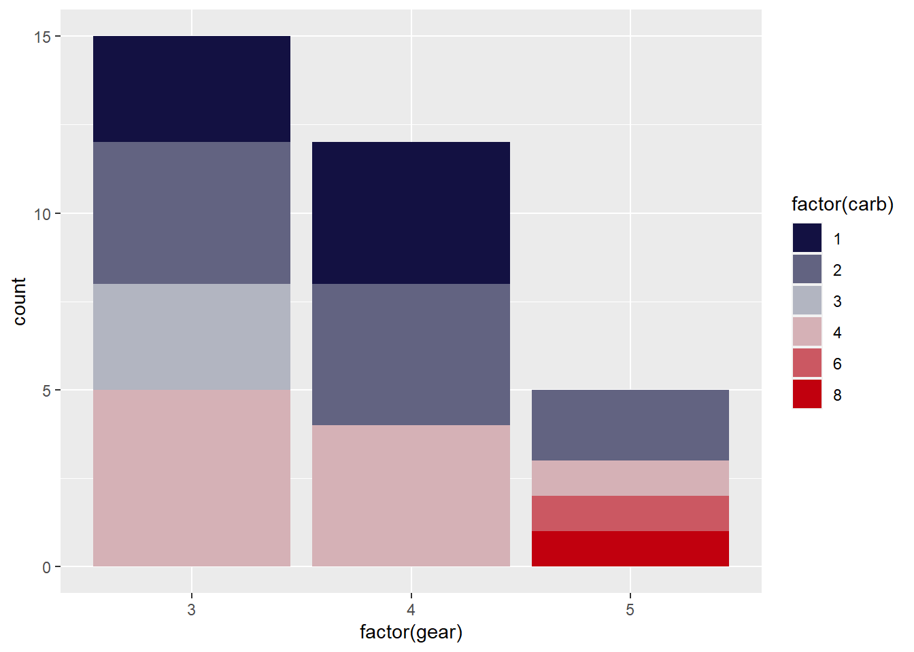
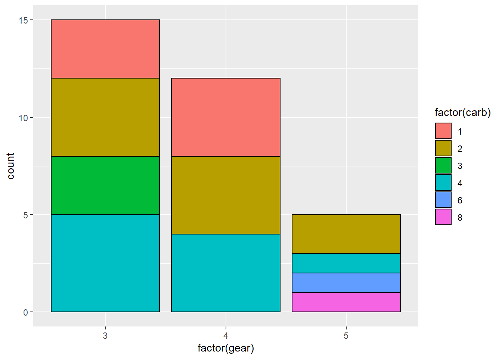

Chapter 7 Figures and Graphs with the ggplot and see packages
There are three parts to a ggplot2 call: 1. data 2. aesthetic mapping 3. Layer
There is no piping involved in ggplot. You simply invoke ggplot, and tell it what they dataset is. Then you specify the aesthetics, and then the mapping. Lastly, include other optional stuff (e.g. expanded y-axis scale; titles and legends; etc.)
Every single plot has the exact same layout that ONLY USES the above three points:
ggplot(dataframe, aes(graph dimensions and variables used)) +
geom_GraphType(specific graph controls)
## OR ##
ggplot(dataframe) +
geom_GraphType(aes(graph dimensions and variables used), specific graph controls)
# mapping= aes() can go in either spotThen if you have other stuff you want to add on top of this, like axis labels, annotations, highlights, etc., you keep adding those in separate lines
7.1 Commands for ggplot graph types
| Graph Type | Geom command |
|---|---|
| Scatter | geom_point() |
| Line | geom_line() |
| Box | geom_boxplot() |
| Bar | geom_bar() |
| Column | geom_col() |
| Histogram | geom_histogram() |
| Density curve | geom_density() |
Note that bar and column graphs look identical at first glance, but they serve two different purposes.
Bar graphs are for frequency counts, and thus only take an X-axis variable; Column graphs are for showing the relationship between two variables X and Y, and display the values in the data
# BAR GRAPH
# height of bars is a frequency count of each level of the X variable cut
bar_plot=ggplot(diamonds, aes(x=cut)) +
geom_bar()+
theme_classic()
# COLUMN GRAPH
# height of bars represents relationship between price and cut
col_plot=ggplot(diamonds, aes(x=cut, y=price)) +
geom_col()+
theme_classic()
see::plots(bar_plot, col_plot, n_columns = 2, tags = c("Bar", "Column"))
7.2 Specific Commands for Specific Types of Analysis
7.2.1 lavaan stuff
7.2.1.1 Plotting an SEM or CFA model
First lets set up a model to use.
library(lavaan)
HS.model <- ' visual =~ x1 + x2 + x3
textual =~ x4 + x5 + x6
speed =~ x7 + x8 + x9'
fit1 <- cfa(HS.model, data=HolzingerSwineford1939)Two options for graphing it. Option 1 is graph_sem() from the tidySEM package.
tidySEM::graph_sem(fit1)Option 2 is from the easystats suite
plot(parameters::parameters(fit1))## Using `sugiyama` as default layout
7.2.2 Bayes stuff
Quick highlights here of my favorite functions from this package. See (ha) the full package overview at this link
You can adjust the colors of the figures by setting them yourself (with scale_fill_manual), or by using the appropriate scale_fill command
7.2.2.1 Probability of Direction (Pd) figure
Use plot(pd()) to visualize the Probability of Direction index.
plot(bayestestR::pd(fit1))+
scale_fill_manual(values=c("#FFC107", "#E91E63"))+
theme_classic()+
theme(plot.title = element_text(hjust = 0.5, size = 14, face = "italic"))7.2.2.2 ROPE figure
plot(fit1, rope_color = "grey70")+
gameofthrones::scale_fill_got_d(option = "white_walkers")
# scale_fill_manual(values = c("gray75","red")ROPE tests are plots of distributions, and therefore use scale_fill_xyz_d commands. (the ‘d’ stands for ‘discrete’). You can use any scale theme color set from any package, as long as it ends in _d
values=c(“#FFC107”, “#E91E63”) is the default bayestestR theme colors from their website
7.2.2.3 Bayes factor models comparison figure
plot(bayesfactor_models(Thesis_Model,discount_model))+
scale_fill_flat(palette = "complement" , reverse = TRUE)+ # scale color adjustment7.2.3 Histograms and density curves
Since I use these so often I figure they deserve their own special section.
Basic histograms can be built with the following code:
ggplot(data = mtcars, aes(x=cyl)) +
geom_histogram(binwidth = .5, colour="Black", fill="green") + # histogram
theme_classic()
and your basic density curve with the following:
ggplot(diamonds, aes(x=price)) +
geom_density(alpha=.3)+ # density plot. Alpha sets the transparency level of the fill.
theme_classic()
You can also use the following code from bayestestR to build a really quick and nice density curve
plot(bayestestR::point_estimate(diamonds, centrality=c("median","mean")))+
labs(title="Mean and Median")7.3 Highlight specific points
The gghighlight package is great for this
# example 1
ggplot(mtcars, aes(x= mpg, y=hp))+
geom_point()+
theme_classic()+
ggrepel::geom_text_repel(data = mtcars, aes(label = hp))+ # add data labels (optional)
gghighlight::gghighlight(hp > 200) # add highlights, according to some criteria
# example 2
diamonds_abr=diamonds %>% slice(1:100)
ggplot(diamonds_abr, aes(x= cut, y= price, colour=price))+
geom_point()+
theme_classic()+
ggrepel::geom_text_repel(data = diamonds_abr, aes(label = price))+ # this line labels
gghighlight::gghighlight(cut %in% c("Very Good", "Ideal")) #this line highlights
7.4 Add labels to data points
ggplot(mtcars, aes(x= mpg, y=hp))+
geom_point()+
theme_classic()+
ggrepel::geom_text_repel(data = mtcars, aes(label = hp))
ggplot(mtcars, aes(x= mpg, y=hp))+
geom_point() + geom_text(aes(label=hp, hjust=2.5, vjust=2.5))
#geom_label(aes(label = scales::comma(n)), size = 2.5, nudge_y = 6)7.5 Plotting multiple graphs at once
see::plots() is good for this.
print("temp")## [1] "temp"7.6 Change the colors (bars; columns; dots; etc.)
This can be done in at least two different ways, depending on your goal.
To change the fill color by factor or group, add fill = ___ within the aes() command. If you want to add color and/or fill to a continuous variable, do that within the geom_density() command.
If you want to add color and make all of the (bars; dots; lines; etc.) the same color, than that is a graph-wide control and needs to be put in geom_point(). This manually sets the color for the whole graph.
# add a color scale to the dots
ggplot(mtcars, aes(x= mpg, y=hp))+
geom_point(color="blue")
If you want to add color that changes according to a variable (e.g., by factor level), then the color needs to be specified as a variable name, in the aes mapping with the other variables.
ggplot(mtcars, aes(x= mpg, y=hp, color=cyl))+
geom_point()
7.6.1 Fine-tuning colors
You can change the spectrum of colors to specific colors if you want. Useful for example, when making graphs for APLS presentations; you can change the colors to be Montclair State University themed.
When changing the color scale of graphs, note that scale_fill commands are used for representing nominal data, while scale_color commands are for representing continuous data. As such, you use scale_fill to fill in area on a graph that shows a whole category or distinct things; and scale_color to use gradients of color to show changes in continuous data.
- For figures that have solid area (e.g., density; box; bar; violin plots; etc.), use
scale_fill - For figures that have continuous changes (e.g., line and scatter plots), use
scale_color
# Set colors manually
ggplot(mtcars, aes(factor(gear), fill=factor(carb)))+
geom_bar() +
scale_fill_manual(values=c("green", "yellow", "orange", "red", "purple", "blue"))
ggplot(mtcars, aes(x = wt, y = mpg, color=as.factor(cyl)))+
geom_point() +
scale_color_manual(values=c("#999999", "#E69F00", "#56B4E9"))
# Use color scales from a package
library(gameofthrones)
# NOTICE THAT scale_fill AND scale_color STILL APPLY TO THEIR RESPECTIVE GRAPH TYPES
# bar graphs
ggplot(mtcars, aes(factor(gear), fill=factor(carb)))+
geom_bar() +
scale_fill_got(discrete = TRUE, option = "Tully")
ggplot(mtcars, aes(factor(cyl), fill=factor(vs)))+
geom_bar() +
scale_fill_got(discrete = TRUE, option = "Daenerys")
# scatter plot
ggplot(mtcars, aes(x = mpg, y = disp, colour = hp))+
geom_point(size = 2) +
scale_colour_got(option = "Lannister")
“Fill” graphs also come with an extra option: Setting the outline color. You can change the outline of the bar/column/etc. by specifying the color inside geom_x()
# change only the fill of the bars
ggplot(mtcars, aes(factor(gear), fill=factor(carb)))+
geom_bar()
# Change the outline of the bars by adding color inside the geom_bar() command
ggplot(mtcars, aes(factor(gear), fill=factor(carb)))+
geom_bar(color="black")
7.6.2 More options with the see package
See this link for setting color gradients for continuous variables, or using other custom color palattes like the gameofthrones package.
Check out the see package for some good color scales; the commands for which are here.
Incidentally, see is great not only for regular ggplot graphs, but also Bayesian stats graphs link; effect size graphs link; correlation graphs link; and more.
7.7 Other aesthetic mappings
shape() controls the shapes on the graph
alpha() controls transparency
size() controls size
Note again that if you want it to change by variable, it goes INSIDE aes(); but if you want to set it manually for the whole graph, it goes in geom_x()
# shape
ggplot(mtcars, aes(x= mpg, y=hp, shape=as.factor(cyl)))+
geom_point()
ggplot(mtcars, aes(x= mpg, y=hp))+
geom_point(shape=23)
# transparency
ggplot(mtcars, aes(x= mpg, y=hp, alpha=hp))+
geom_point()
# size
ggplot(mtcars, aes(x= mpg, y=hp, size=cyl))+
geom_point()7.8 Adding and Customizing Text
7.8.1 Add a title, axis labels, and captions
All three can be added with labs().
ggplot(mtcars, aes(x=cyl))+
geom_bar(colour="gray", fill="lightgreen")+
labs(title = "Ages of Survey Respondants by Group",
x="Age Group",
caption="Note. Younger= ages 11-29; Older= ages 30-86.")
7.8.2 Center graph title
Add the line theme(plot.title = element_text(hjust = 0.5))
ggplot(mtcars, aes(x=cyl))+
geom_bar(colour="gray", fill="lightgreen")+
labs(title = "Ages of Survey Respondants by Group",
x="Age Group",
caption="Note. Younger= ages 11-29; Older= ages 30-86.")+
theme(plot.title = element_text(hjust = 0.5))
7.8.3 Use different fonts
See tutorial on this web page
Or, use the extrafont package, and set everything using the theme() command.
# Visualize new groups
library(extrafont)
loadfonts(device="win")
ggplot(mtcars, aes(x=cyl))+
geom_bar(colour="gray", fill="lightgreen")+
labs(title = "Ages of Survey Respondants by Group",
x="Age Group",
caption="Note. Younger= ages 11-29; Older= ages 30-86.")+
theme(plot.title = element_text(hjust = 0.5))+
theme(axis.title = element_text(face = "bold", family = "Courier New", size = 12),
axis.text = element_text(face = "italic"),
plot.caption = element_text(face = "italic", family = "Calibri", size = 9),
plot.title = element_text(face = "bold",size = 14, family = "Courier New"))
7.9 Remove gridlines
Add theme(panel.grid = element_blank())
ggplot(mtcars, aes(x=cyl))+
geom_bar(colour="gray", fill="lightgreen")+
labs(title = "Ages of Survey Respondants by Group",
x="Age Group",
caption="Note. Younger= ages 11-29; Older= ages 30-86.")+
theme(plot.title = element_text(hjust = 0.5))+
theme(axis.title = element_text(face = "bold", family = "Courier New", size = 12),
axis.text = element_text(face = "italic"),
plot.caption = element_text(face = "italic", family = "Calibri", size = 9),
plot.title = element_text(face = "bold",size = 14, family = "Courier New"))+
theme(panel.grid = element_blank())
7.10 Faceting
This is dividing one plot into subplots, in order to communicate relationships better. Again, this is just a single extra command, this time at the end of the code: facet_wrap(~columnhead) The tilde sign in R means “by”, as in “divide (something) by this”
print("temp")This line produces a graph of population and life expectency, breaking it down to make a separate graph per each continent
7.11 Log transformations
Sometimes when your data is really squished together on a graph it is hard to read. In this case, log transformations are really helpful, to change the scale of the data.
For example, by multiplying all your points by 10x
To create a log transformation of the same scatter plot above, add one extra bit: scale_x_log10()
print("temp")You can also make both axis be logged by adding +scale again for y
7.12 Changing the scale of the axis
Add coord_cartesian(xlim = c(lower,upper))
print("temp")## [1] "temp"7.13 Add a regression line
Add the line geom_smooth(method = "lm", formula = y ~ x)
ggplot(mtcars, aes(x= mpg, y=hp, color=mpg))+
geom_point()+
geom_smooth(method = "lm", formula = y ~ x)
7.14 Save a graph or figure
Use the ggsave command
ggsave(
"panss_total_scores.png",
plot = scatter_plot,
device = "png",
path = here::here("Figures and Tables"),
scale = 1,
width = NA,
height = NA,
units = c("in", "cm", "mm", "px"),
dpi = 300,
limitsize = TRUE,
bg = NULL,
)